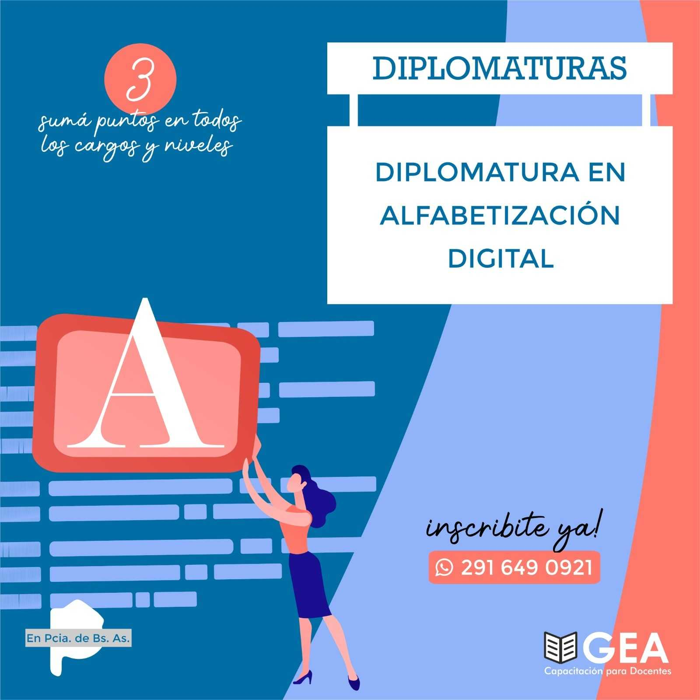
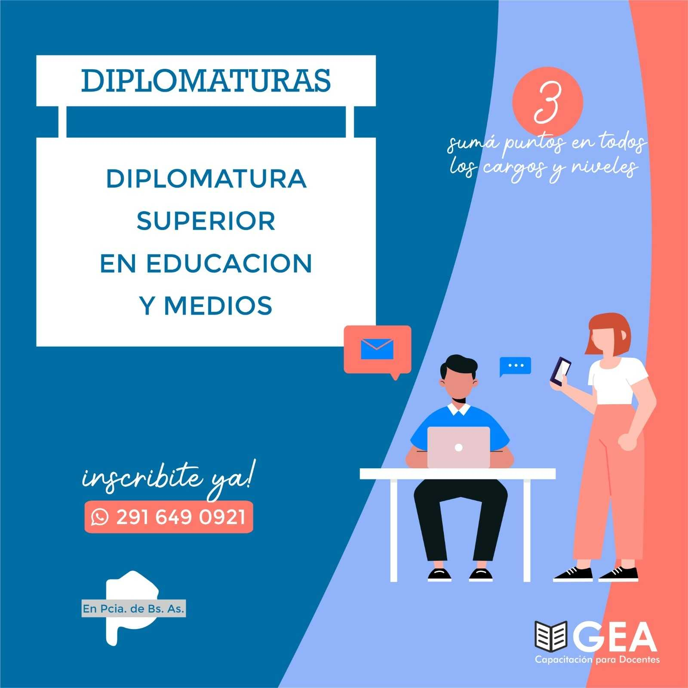
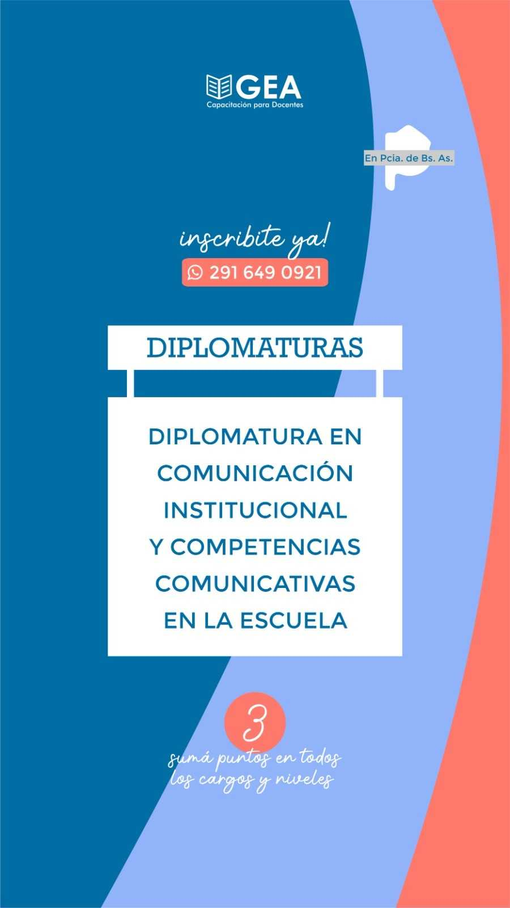
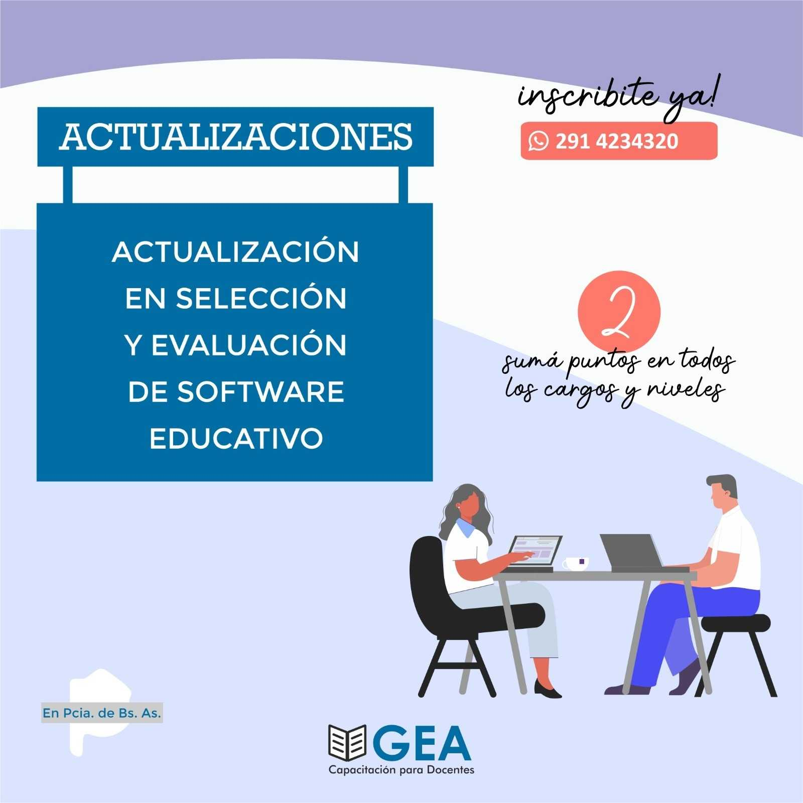
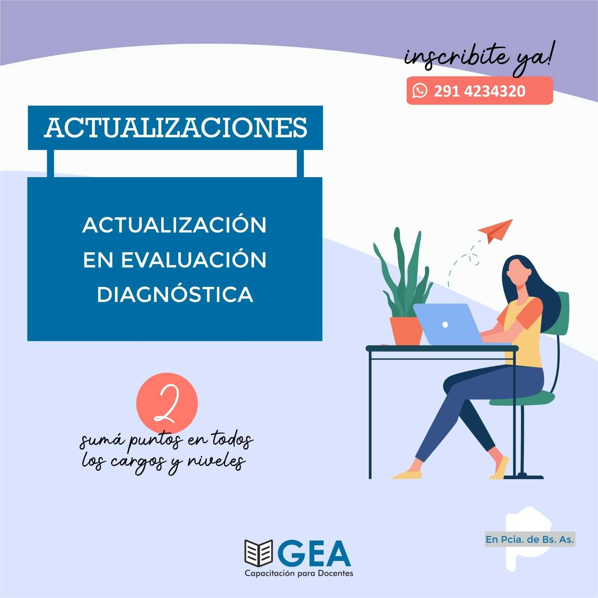
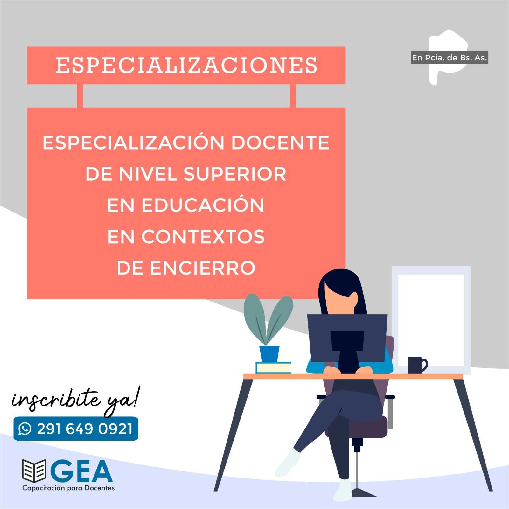

Capacitaciones para docentes
DIPLOMATURAS
Diplomatura en Alfabetización Digital
Esta Diplomatura Universitaria se enfoca en la Alfabetización Digital como una habilidad fundamental para aprovechar las Nuevas Tecnologías de la Información y la Comunicación (NTIC) en la educación. Reconociendo la evolución de la Alfabetización a lo largo del tiempo, abordamos múltiples formas de alfabetización. Si deseas desarrollar tus habilidades en Alfabetización Digital, explora nuestros programas educativos hoy mismo.
Diplomatura en Comunicación Institucional

La Diplomatura en Comunicación Institucional y Competencias Comunicativas en la Escuela se enfoca en la relación entre comunicación y cultura institucional. Destaca que la comunicación es una responsabilidad compartida y fundamental en la educación. Aborda la importancia de la escuela como un ecosistema comunicacional que influye en educadores, ambiente, contenidos y metodologías. Esta diplomatura ofrece tanto conocimientos teóricos como herramientas prácticas para abordar esta problemática en el contexto educativo. Si deseas desarrollar tus habilidades en Comunicación Institucional , explora nuestros programas educativos hoy mismo
Diplomatura en Dirección de Instituciones Educativas

La Diplomatura en Comunicación Institucional y Competencias Comunicativas en la Escuela se centra en la relación entre comunicación y cultura institucional en el entorno educativo. Destaca que la comunicación es una responsabilidad compartida y que la escuela actúa como un ecosistema comunicacional que influye en educadores, ambiente, contenidos y metodologías. Esta diplomatura aborda la importancia de la comunicación cultural y ofrece contenidos teóricos y prácticos para abordar esta problemática en la educación."
Diplomatura en Evaluación Educativa

El Diplomado en Evaluación Educativa fomenta un análisis reflexivo de la evaluación como herramienta para mejorar las prácticas docentes. Se enfoca en la importancia de considerar la evaluación no sólo como un proceso final, sino como una oportunidad para tomar decisiones informadas durante todo el proceso educativo. Esta propuesta se basa en un enfoque crítico que aborda los desafíos éticos, políticos, pedagógicos y sociales que enfrentan los docentes en relación con la evaluación educativa."
Diplomatura en Problemas Actuales de la Gestión Institucional
La Diplomatura en Problemas Actuales de la Gestión tiene como objetivo colaborar en la mejora de las prácticas educativas en equipos directivos y docentes. Aborda la necesidad de promover, desarrollar, sostener y evaluar propuestas de mejora en las escuelas, considerando problemas actuales de la gestión institucional. Se enfoca en la innovación y el cambio en las instituciones educativas, abordando los desafíos y la incertidumbre que pueden surgir en este proceso.
Diplomatura en Educación y Medios
La diplomatura aborda la relación entre educación y medios de comunicación en la sociedad actual. Se enfoca en cómo integrar los medios en la educación, promover habilidades críticas y reflexivas, y enseñar a los estudiantes a seleccionar información de manera informada en medios tradicionales y nuevas tecnologías.
ACTUALIZACIÓNES ACADÉMICAS
Actualización Selección y evaluación de software educativo
Esta Actualización Académica se centra en la selección y evaluación de software educativo libre para su uso en el aula. El objetivo es aprovechar las computadoras como recursos didácticos para mejorar el aprendizaje de los estudiantes, manteniendo un enfoque en el presente y el futuro de la educación digital. Si deseas desarrollar tus habilidades en Software Educativo , explora nuestros programas educativos hoy mismo
Evaluación Diagnóstica para aprendizaje sustentable
Los objetivos generales de esta actualización se centran en el análisis de las circunstancias educativas para mejorar el proceso de enseñanza y aprendizaje. Se enfoca en el diagnóstico integral del sujeto y revisa diferentes tipos de evaluaciones, centrándose en la evaluación diagnóstica.
Actualización Académica en Ecosistemas Digitales en la escuela
Esta Actualización Académica se enfoca en los ecosistemas digitales como entornos de interacción y aprendizaje. Se centra en cuatro ejes transformadores: la renovación de teorías de aprendizaje, el uso de plataformas de aprendizaje como entornos personales, el aprendizaje en comunidades virtuales y el papel de las redes sociales educativas
ESPECIALIZACIONES DOCENTES DE NIVEL SUPERIOR
Especialización Docente de Nivel Superior en Educación Permanente de Jóvenes y Adultos

Esta Especialización se centra en la gestión institucional y del aula en la Educación Permanente de Jóvenes y Adultos. Se enfoca en analizar y reflexionar sobre el Marco Político-Pedagógico de la Educación de Jóvenes y Adultos en el contexto socio-histórico actual, así como en analizar los contextos institucionales en los que trabajan los profesores de personas jóvenes y adultos.
Especialización Docente de Nivel Superior en Jardín maternal

Esta propuesta apunta a formar especialistas en Jardín Maternal que contemple una mejor calidad de la enseñanza, así como la concreción de una formación profesional integral, de modo tal que los docentes se apropien de nuevos saberes y habilidades, fortaleciendo su capacidad de reflexión y acción en relación con las necesidades de los niños pequeños y sus familias. Consultá el puntaje docente para cada provincia.
Especialización Docente de Nivel Superior en Educación en Contextos de encierro
La especialización tiene una duración de cuatro bimestres y consta de 9 módulos virtuales con exámenes tipo multiple choice y recuperatorios. Es habilitante para trabajar en instituciones de encierro y aborda aspectos jurídicos, el rol docente, estrategias didácticas, salud, trabajo, arte y cultura en la educación en contextos de encierro. Es un desafío para los docentes interesados en esta modalidad educativa.
Tramo Pedagógico de Nivel Medio y SUPERIOR